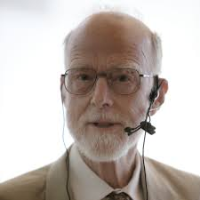
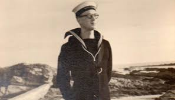
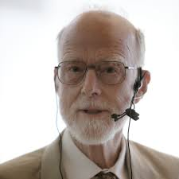
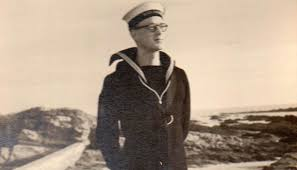

His Contributions
1- Tony Hoare is the winner of the 1980 A.M. Turing Award, the highest honour in computer science,
for his fundamental contributions to the definition and design of programming languages.
2-In 1956 Hoare earned a bachelor’s degree in classics from the University of Oxford
3-He worked on programming languages, especially the development of a compiler for a version of ALGOL.
4- Tony is best known for the development of Quicksort
5- Quicksort is the world's most widely used sorting algorithm
His History
In 1956 Hoare earned a bachelor’s degree in classics from the University of Oxford. Following graduation, he studied Russian during his national service in the Royal Navy (1956–58) and then took some graduate-level courses in statistics and computer programming at Oxford. In 1959 Hoare moved to Russia for graduate work in probability theory and computer translation of human languages at Moscow State University. At that time, Hoare devised Quicksort, a computer algorithm for efficiently looking up information in computer tables. Hoare returned to England in 1960 and joined Elliot Brothers, Ltd., a computer manufacturer, where he worked on programming languages, especially the development of a compiler for a version of ALGOL. In 1968 Hoare accepted a professorship in computer science at Queen’s University of Belfast. He returned to Oxford as a computer science professor in 1977. Following his retirement from Oxford in 1999, Hoare became a senior researcher at Microsoft Research, a division of the Microsoft Corporation, in Cambridge, England.
Quotes
-“Inside every large program is a small program struggling to get out.”
-"I call it my billion-dollar mistake. It was the invention of the null reference in 1965."
-"There are two ways of constructing a piece of software: One is to make it so simple that there are obviously no errors, and the other is to make it so complicated that there are no obvious errors."
-"Here is a language so far ahead of it's time, that not only was it an improvement on it's predecessors, but nearly on all its successors."